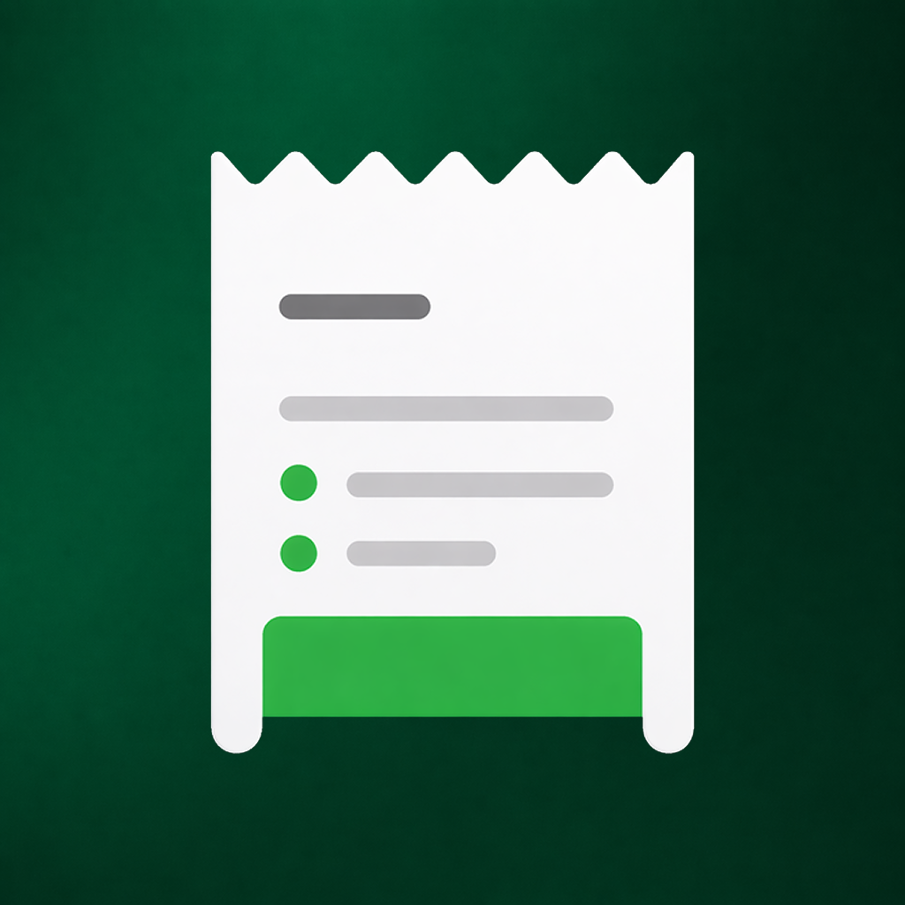

سياسة الخصوصية
Privacy Policy
صُمم تطبيق «مصروفي» ليعمل محلياً قدر الإمكان، دون إنشاء حساب ودون رفع بياناتك المالية تلقائياً إلى خوادم المطوّر. توضح هذه السياسة البيانات التي يعالجها التطبيق، وكيف تبقى تحت سيطرتك، وما الذي يحدث عند التصدير أو المشاركة أو التواصل معنا.
Expensey is designed to operate locally whenever possible, without requiring an account and without automatically uploading your financial data to the developer’s servers. This policy explains the data processed by the app, how it remains under your control, and what happens when you export, share, or contact us.
1. معلومات التطبيق والمطور
يوضح هذا القسم المعلومات الأساسية الخاصة بالتطبيق والمطور المسؤول عنه.
1. App and Developer Information
This section provides the basic information about the app and its developer.
2. نطاق هذه السياسة
تنطبق هذه السياسة على تطبيق مصروفي (Expensey) على الأجهزة المحمولة، وعلى صفحة سياسة الخصوصية هذه. ويُقصد بعبارة «التطبيق» في هذه السياسة تطبيق مصروفي، وبعبارة «المطوّر» مطوّر تطبيق مصروفي.
لا تغطي هذه السياسة ممارسات المتاجر أو أنظمة التشغيل أو تطبيقات البريد والمتصفح والمشاركة أو أي خدمة خارجية تفتحها باختيارك؛ إذ تخضع تلك الخدمات لسياساتها وشروطها الخاصة.
2. Scope of This Policy
This policy applies to the Expensey mobile app and to this privacy policy page. In this policy, “the app” means Expensey, and “the developer” means the developer of Expensey.
This policy does not cover the practices of app stores, operating systems, email apps, browsers, sharing tools, or any external service you choose to open. Those services are governed by their own policies and terms.
3. ملخص الخصوصية
يعمل مصروفي وفق مبدأ التخزين المحلي أولاً. لا يحتاج المستخدم إلى إنشاء حساب، ولا يرسل التطبيق تلقائياً المصروفات أو الدخل أو الميزانيات أو الديون أو غيرها من البيانات المالية إلى خوادم المطوّر.
3. Privacy Summary
Expensey follows a local-first storage approach. You do not need to create an account, and the app does not automatically send expenses, income, budgets, debts, or other financial data to the developer’s servers.
4. البيانات التي يعالجها التطبيق محلياً
قد يُدخل المستخدم أو ينشئ داخل التطبيق أنواعاً مختلفة من البيانات. تُستخدم هذه البيانات لتقديم وظائف التطبيق وتُخزن محلياً على الجهاز، وتشمل بحسب الميزات التي يستخدمها الشخص:
| نوع البيانات | أمثلة | مكان المعالجة الافتراضي |
|---|---|---|
| بيانات المصروفات | المبلغ، التاريخ، التصنيف، الملاحظة، وطريقة الدفع الاختيارية | محلياً على الجهاز |
| بيانات التخطيط المالي | الدخل الشهري، الميزانية، أهداف الادخار، ميزانيات التصنيفات، والخطط المؤقتة | محلياً على الجهاز |
| بيانات التنظيم | التصنيفات المخصصة، القوالب، المصاريف المتكررة، والاقتراحات المحلية | محلياً على الجهاز |
| بيانات الديون | ما لك وما عليك، أسماء يضيفها المستخدم، المبالغ، المواعيد، والدفعات | محلياً على الجهاز |
| تفضيلات التطبيق | اللغة، العملة، المظهر، تخصيص الواجهة، ووضع الخصوصية | محلياً على الجهاز |
| حالة الاستخدام المحلية | إكمال التهيئة الأولى وآخر إصدار تمت مشاهدة قسم «ما الجديد» فيه | محلياً على الجهاز |
لا يضيف التطبيق هذه البيانات إلى قاعدة بيانات مركزية لدى المطوّر، ولا يستطيع المطوّر الاطلاع عليها عن بُعد ما لم يرسل المستخدم جزءاً منها بنفسه ضمن رسالة دعم أو ملف يختار مشاركته.
4. Data Processed Locally by the App
You may enter or create different types of data in the app. This data is used to provide app features and is stored locally on your device. Depending on the features you use, it may include:
| Data type | Examples | Default processing location |
|---|---|---|
| Expense data | Amount, date, category, note, and optional payment method | Locally on your device |
| Financial planning data | Monthly income, budget, savings goals, category budgets, and temporary plans | Locally on your device |
| Organization data | Custom categories, templates, recurring expenses, and local suggestions | Locally on your device |
| Debt data | Amounts owed to you or by you, names you enter, due dates, and payments | Locally on your device |
| App preferences | Language, currency, appearance, interface customization, and privacy mode | Locally on your device |
| Local usage state | Completion of first-run onboarding and the last version viewed in “What’s New” | Locally on your device |
The app does not add this data to a centralized database operated by the developer. The developer cannot access it remotely unless you personally send part of it in a support message or choose to share a file containing it.
5. البيانات التي لا يجمعها المطوّر تلقائياً
في الإصدار الحالي، لا يجمع المطوّر تلقائياً من خلال التطبيق:
- الاسم أو رقم الهاتف أو العنوان أو تاريخ الميلاد.
- البريد الإلكتروني بغرض إنشاء حساب؛ فالتطبيق لا يتطلب حساباً أصلاً.
- الموقع الجغرافي.
- جهات الاتصال أو الصور أو الكاميرا أو الميكروفون.
- بيانات البطاقات البنكية أو كلمات مرور الحسابات البنكية.
- المعرّفات الإعلانية أو بيانات مخصصة للإعلانات.
- سجل تصفح أو تحليلات سلوكية ترسل إلى المطوّر.
- بيانات البصمة أو صورة الوجه الخام.
5. Data the Developer Does Not Collect Automatically
In the current version, the developer does not automatically collect through the app:
- Your name, phone number, address, or date of birth.
- Your email address for account creation, because the app does not require an account.
- Your location.
- Your contacts, photos, camera, or microphone data.
- Bank card details or online banking passwords.
- Advertising identifiers or data used for personalized advertising.
- Browsing history or behavioral analytics sent to the developer.
- Raw fingerprint or facial data.
6. لماذا يعالج التطبيق البيانات محلياً؟
تُعالج البيانات على جهازك للأغراض الوظيفية التالية فقط:
- تسجيل المصروفات وتعديلها وعرضها والبحث فيها.
- حساب الإجماليات والميزانيات والتوقعات والتحليلات المحلية.
- إدارة التصنيفات والقوالب والمصاريف المتكررة والخطط المؤقتة والديون.
- تخصيص اللغة والعملة والمظهر وأقسام الشاشة الرئيسية.
- إظهار أداة الشاشة الرئيسية عند تفعيلها.
- إنشاء التقارير والنسخ الاحتياطية والملفات التي يطلبها المستخدم.
- حماية الوصول إلى التطبيق عند تفعيل رمز القفل أو التحقق البيومتري.
6. Why the App Processes Data Locally
Data is processed on your device only for the following functional purposes:
- Recording, editing, displaying, and searching expenses.
- Calculating totals, budgets, projections, and local analyses.
- Managing categories, templates, recurring expenses, temporary plans, and debts.
- Customizing language, currency, appearance, and home screen sections.
- Displaying the home screen widget when enabled.
- Creating reports, backups, and files requested by the user.
- Protecting access to the app when PIN lock or biometric authentication is enabled.
7. الحماية، رمز القفل، والبصمة
رمز القفل
عند تفعيل قفل التطبيق، لا يُخزَّن رمز القفل بصورته النصية داخل قاعدة بيانات التطبيق. يُخزن تمثيل غير قابل للعكس منه في مساحة التخزين الآمنة التي يوفرها نظام التشغيل. لا يملك المطوّر نسخة من الرمز ولا يستطيع استعادته عن بُعد.
البصمة أو التعرف على الوجه
عند اختيار التحقق البيومتري، تتم عملية المطابقة بواسطة نظام التشغيل وواجهة الأمان الخاصة بالجهاز. لا يحصل مصروفي على بصمة المستخدم أو صورة وجهه أو قالب البيانات البيومترية، وإنما يتلقى فقط نتيجة نجاح التحقق أو فشله.
حدود الحماية المحلية
قفل التطبيق ووضع إخفاء المبالغ يساعدان في منع الاطلاع العابر داخل واجهة التطبيق، لكن قاعدة البيانات المحلية نفسها ليست مشفّرة على مستوى التخزين في الإصدار الحالي. لذلك يُنصح بتفعيل قفل الجهاز، وعدم مشاركة الجهاز مع أشخاص غير موثوقين، وحفظ الملفات المصدرة في مكان آمن.
7. Security, PIN Lock, and Biometrics
PIN lock
When app lock is enabled, the PIN is not stored as plain text in the app database. A non-reversible representation of it is stored in the secure storage provided by the operating system. The developer does not have a copy of the PIN and cannot recover it remotely.
Fingerprint or facial recognition
When biometric authentication is selected, matching is performed by the operating system and the device’s security interface. Expensey does not receive your fingerprint, facial image, or biometric template. It receives only the result of the authentication attempt.
Limits of local protection
App lock and amount masking help prevent casual viewing inside the app. However, the local database itself is not encrypted at the storage level in the current version. We therefore recommend enabling your device lock, avoiding sharing the device with untrusted people, and storing exported files in a secure location.
8. النسخ الاحتياطي، الاستيراد، التصدير، والمشاركة
لا تغادر البيانات جهازك بسبب هذه الوظائف إلا بعد إجراء واضح يختاره المستخدم. وقد ينشئ التطبيق الأنواع التالية:
النسخة الاحتياطية العادية
قد تحتوي النسخة الاحتياطية العادية على بيانات مالية وإعدادات بصيغة قابلة للقراءة. هذه النسخة غير مشفّرة، ولذلك يجب عدم مشاركتها مع الآخرين وحفظها في موقع موثوق.
النسخة الاحتياطية المشفّرة
يستطيع المستخدم إنشاء نسخة مشفّرة بكلمة مرور. لا تُرسل كلمة المرور إلى المطوّر ولا تُحفظ لديه، ولا يمكن استعادة النسخة إذا نُسيت كلمة المرور.
ملفات CSV وPDF وصورة ملخص الشهر
تحتوي الملفات والتقارير والصور الناتجة على البيانات والمبالغ الحقيقية المطلوبة للتصدير، حتى عندما يكون وضع إخفاء المبالغ مفعلاً داخل واجهة التطبيق. يجب معاينة الملف واختيار جهة المشاركة بعناية.
مسؤولية النسخ التي ينشئها المستخدم
بعد حفظ ملف أو إرساله إلى تطبيق آخر أو خدمة سحابية، يصبح الاحتفاظ به وحمايته وحذفه خاضعاً لاختيارات المستخدم وسياسة الجهة التي استلمته. حذف البيانات من مصروفي لا يحذف تلقائياً النسخ الموجودة خارج التطبيق.
8. Backup, Import, Export, and Sharing
Data does not leave your device through these features unless you take a clear action to do so. The app may create the following types of files:
Standard backup
A standard backup may contain financial data and settings in a readable format. This backup is not encrypted, so it should not be shared with others and should be stored securely.
Encrypted backup
You can create a password-protected encrypted backup. The password is not sent to or stored by the developer, and the backup cannot be restored if the password is forgotten.
CSV, PDF, and monthly summary image files
Generated files, reports, and images contain the real data and amounts requested for export, even when amount masking is enabled in the app interface. Review the file and choose the recipient carefully.
Your responsibility for created copies
After a file is saved or sent to another app or cloud service, its retention, protection, and deletion are governed by your choices and the recipient service’s policy. Deleting data from Expensey does not automatically delete copies stored outside the app.
9. أداة الشاشة الرئيسية
قد تعرض أداة مصروفي على الشاشة الرئيسية إجماليات اليوم والشهر. ولأن محتوى الأداة قد يكون مرئياً لمن يستطيع رؤية شاشة الجهاز، يوفر التطبيق خياراً مستقلاً لإخفاء مبالغ الأداة. يتحمل المستخدم مسؤولية اختيار الإعداد المناسب لطريقة استخدام جهازه.
9. Home Screen Widget
The Expensey home screen widget may display today’s and this month’s totals. Because widget content can be visible to anyone who can view the device screen, the app provides a separate option to hide widget amounts. You are responsible for selecting the setting that fits how you use your device.
10. الإجراءات والخدمات الخارجية
إرسال الملاحظات أو طلب الدعم
عند اختيار «إرسال ملاحظة»، يفتح التطبيق تطبيق البريد المتاح على الجهاز برسالة يعدّها مسبقاً. لا تُرسل الرسالة إلا بعد مراجعة المستخدم وموافقته. قد تتضمن الرسالة معلومات تقنية عامة مثل اسم التطبيق، رقم الإصدار، نظام التشغيل، ولغة التطبيق، إضافة إلى عنوان البريد ومحتوى الرسالة الذي يختاره المستخدم. لا يرفق التطبيق بيانات مالية تلقائياً.
تخضع عملية إرسال البريد لممارسات مزوّد البريد، وقد نحتفظ بمراسلات الدعم بالقدر اللازم للرد، وحل المشكلة، وحماية الخدمة، والوفاء بالمتطلبات النظامية عند انطباقها.
المتصفح، التقييم، والمشاركة
قد يفتح التطبيق المتصفح الخارجي أو صفحة المتجر أو لوحة المشاركة عندما يطلب المستخدم ذلك. قد تعالج هذه الجهات بيانات تقنية وفق سياساتها الخاصة، ولا يتحكم مصروفي في طريقة معالجتها.
متاجر التطبيقات ونظام التشغيل
قد يعالج متجر التطبيقات أو نظام التشغيل معلومات مرتبطة بتنزيل التطبيق وتحديثه وتشغيله وأمان الجهاز. تتم هذه المعالجة بصورة مستقلة عن المطوّر ووفق سياسات تلك الجهات.
10. External Actions and Services
Sending feedback or requesting support
When you choose “Send Feedback,” the app opens an available email app with a prepared message. The message is not sent until you review and approve it. It may include general technical details such as the app name, version number, operating system, and app language, along with your email address and the message content you choose. The app does not automatically attach financial data.
Email delivery is subject to your email provider’s practices. We may retain support correspondence as needed to respond, resolve the issue, protect the service, and meet applicable legal requirements.
Browser, rating, and sharing
The app may open an external browser, an app store page, or the system share sheet when you request it. Those parties may process technical data under their own policies, and Expensey does not control that processing.
App stores and the operating system
The app store or operating system may process information related to downloading, updating, running, and securing the app. This processing is independent of the developer and is governed by those parties’ policies.
11. مدة الاحتفاظ بالبيانات وكيفية حذفها
البيانات المحلية
تبقى البيانات المحلية على الجهاز إلى أن يحذفها المستخدم من داخل التطبيق، أو يمسح بيانات التطبيق من إعدادات الجهاز، أو يزيل التطبيق. قد يؤدي حذف التطبيق أو مسح بياناته إلى فقدان البيانات المحلية نهائياً إذا لم توجد نسخة احتياطية صالحة.
الملفات المصدرة
تبقى النسخ الاحتياطية وملفات CSV وPDF والصور في المواقع أو التطبيقات التي اختار المستخدم حفظها أو مشاركتها معها، ويجب حذفها من تلك المواقع بصورة مستقلة.
مراسلات الدعم
يستطيع المستخدم طلب حذف مراسلات الدعم التي يمكن ربطها به عبر البريد الرسمي الموضح في قسم «معلومات التطبيق والمطور»، مع مراعاة ما يلزم الاحتفاظ به نظامياً أو لأغراض منع إساءة الاستخدام وتسوية النزاعات.
الوصول والتصحيح
لأن البيانات المالية الأساسية لا تُرفع إلى خوادم المطوّر، يستطيع المستخدم الوصول إليها وتصحيحها وحذفها مباشرة داخل التطبيق. لا يستطيع المطوّر تنفيذ هذه الإجراءات عن بُعد على بيانات محفوظة داخل جهاز المستخدم فقط.
11. Data Retention and Deletion
Local data
Local data remains on the device until you delete it in the app, clear the app’s data in device settings, or uninstall the app. Clearing app data or uninstalling the app may permanently remove local data if no valid backup exists.
Exported files
Backups, CSV files, PDF files, and images remain in the locations or apps where you chose to save or share them. They must be deleted separately from those locations.
Support correspondence
You may request deletion of support correspondence that can be linked to you through the official email shown in the “App and Developer Information” section, subject to any retention required by law or needed to prevent abuse and resolve disputes.
Access and correction
Because core financial data is not uploaded to the developer’s servers, you can access, correct, and delete it directly in the app. The developer cannot perform these actions remotely on data stored only on your device.
12. صلاحيات الجهاز
يلتزم التطبيق بطلب أقل قدر لازم من الوصول. وقد يستخدم، بحسب الميزات المفعّلة وإصدار نظام التشغيل:
- التحقق البيومتري: لعرض نافذة التحقق الآمنة عند تفعيل قفل التطبيق بالبصمة أو الوجه.
- اختيار الملفات: لاختيار ملف استيراد أو مكان حفظ عبر واجهات النظام التي يتحكم فيها المستخدم.
- المشاركة وفتح الروابط: لفتح لوحة المشاركة أو البريد أو المتصفح أو صفحة المتجر بعد طلب المستخدم.
- أداة الشاشة الرئيسية: لتحديث البيانات المختصرة التي اختار المستخدم عرضها على أداة مصروفي.
لا يستخدم التطبيق هذه الصلاحيات لجمع بيانات إضافية لأغراض الإعلان أو إنشاء ملف تعريفي عن المستخدم.
12. Device Permissions
The app is designed to request the minimum access necessary. Depending on enabled features and your operating system version, it may use:
- Biometric authentication: to display the secure authentication prompt when fingerprint or face app lock is enabled.
- File selection: to choose an import file or save location through system interfaces you control.
- Sharing and opening links: to open the share sheet, email app, browser, or app store page after your request.
- Home screen widget: to update the summary data you chose to display in the Expensey widget.
The app does not use these permissions to collect additional data for advertising or to build a user profile.
13. خصوصية الأطفال
مصروفي أداة عامة لتنظيم المصروفات الشخصية، وليس موجهاً بصورة خاصة إلى الأطفال، ولا يطلب إنشاء حساب أو إدخال العمر. ولا يجمع المطوّر عمداً بيانات شخصية من الأطفال عبر خادم تابع له. عند استخدام طفل للتطبيق، يُنصح أن يكون ذلك بإشراف ولي الأمر وبما يناسب عمره.
13. Children’s Privacy
Expensey is a general personal expense organization tool and is not specifically directed to children. It does not require an account or ask for age. The developer does not knowingly collect children’s personal data through a developer-operated server. If a child uses the app, parental or guardian supervision is recommended.
14. التغييرات على سياسة الخصوصية
قد نحدّث هذه السياسة عند إضافة ميزة جديدة، أو تغيير طريقة معالجة البيانات، أو استجابة لمتطلبات نظامية أو متطلبات متاجر التطبيقات. سيُحدّث تاريخ «آخر تحديث» أعلى الصفحة، وقد يُعرض إشعار داخل التطبيق عندما يكون التغيير جوهرياً.
إذا أُضيفت مستقبلاً خدمات سحابية أو تحليلات أو إعلانات أو أي معالجة خارج الجهاز، فستُحدّث هذه السياسة وإفصاحات المتجر قبل استخدام تلك المعالجة.
14. Changes to This Privacy Policy
We may update this policy when adding a new feature, changing how data is processed, or responding to legal or app store requirements. The “Last updated” date at the top of the page will be revised, and an in-app notice may be displayed when a change is material.
If cloud services, analytics, advertising, or any other off-device processing are introduced in the future, this policy and the relevant store disclosures will be updated before that processing is used.